使用 CMAT
引言
注意
本算例的项目文件可在 PFC 中查看或运行。[1]所用的数据文件（data files）列于本算例末尾。
接触形成时应安装哪种接触模型？这一问题的答案决定了 PFC 模型的本构力学行为，因而是一个根本性的问题，并与每个 PFC 模型的具体情况密切相关。除建模者本人外，无人能够回答，而 PFC 本身也无法做出任何通用的假设[2]。因此，PFC 默认采用 空模型（null model） 接触模型，从而要求用户在每个 PFC 模型中明确指定应使用何种接触模型。
接触模型分配表（CMAT）（Contact Model Assignment Table (CMAT)） 已在 PFC 中引入，使用户能够指定这一信息。CMAT 是一种非常通用的工具，既能处理内置接触模型（built-in contact models），也能处理用户自定义接触模型（user-defined contact models）。此外，只需少量命令行，它便可用来构建简单系统，也可构建复杂系统（即包含多种接触模型和/或非均质力学性质的系统）。
本教程说明 CMAT 的主要功能以及如何恰当地使用它们。每当模型中创建新的接触时都会查询 CMAT，以确定应在该特定接触处安装哪种接触模型。
数值模型
本教程使用的数值模型有意保持简单。在一个容器（用墙模拟）中填入 一组球颗粒，并执行循环计算，使模型在各种加载条件下达到平衡。
以下讨论侧重于与 CMAT 相关的功能。有关模型其他方面（集合体的生成）的更多信息，请参阅教程“箱中的球颗粒（Balls in a Box）”。
使用默认槽位
如此处（here）所述，CMAT 由一组有序的（可选）槽位以及针对每种接触类型的默认槽位组成。在许多情况下，系统的本构行为是均质的，此时只需设置 CMAT 的默认槽位即可。
在“cmat1.dat 数据文件（cmat1.dat）”中，CMAT 的默认槽位填入 线性（linear） 接触模型，其法向刚度 \(k_n\)=1.0e6、法向临界阻尼比 \(\beta_n\)=0.2[3]。这通过以下命令实现
; 设置 CMAT 的全部默认槽位
contact cmat default model linear property kn 1e6 dp_nratio 0.2
请注意，除非指定了类型，否则 contact cmat default 命令将自动应用于所有默认槽位。此处构建的系统同时包含球颗粒-球颗粒接触和球颗粒-面片接触；所有这些接触都使用同一线性模型，其 \(k_n\)=1.0e6、\(\beta_n\)=0.2。图 1（Figure 1） 显示了球颗粒在重力作用下沉积到箱体底部后系统的最终状态。

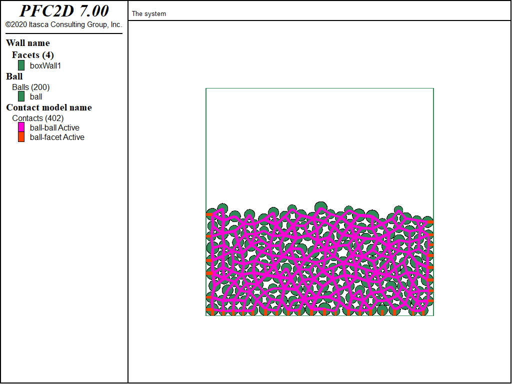
图 1：由“cmat1.dat 数据文件（cmat1.dat）”构建的最终系统。
数据文件“cmat2.dat 数据文件（cmat2.dat）”构建的系统与上述系统类似，只是使用了两种不同的接触模型而非一种。球颗粒之间的接触被赋予 赫兹模型（Hertz Model） 接触模型，而球颗粒与墙面片之间的接触则保留线性接触模型。由于这种区分仅基于接触的类型，CMAT 的默认槽位同样足以胜任：
; 为球-球和球-面片接触类型设置不同的接触模型
contact cmat default type ball-ball ...
model hertz ...
property hz_shear 30e9 hz_poiss 0.3 ...
fric 0.25 ...
dp_nratio 0.2
contact cmat default type ball-facet ...
model linear ...
property kn 1e6 dp_nratio 0.2
图 2（Figure 2） 显示了系统的最终状态；在模拟过程中已恰当地赋予这两种不同的接触模型。

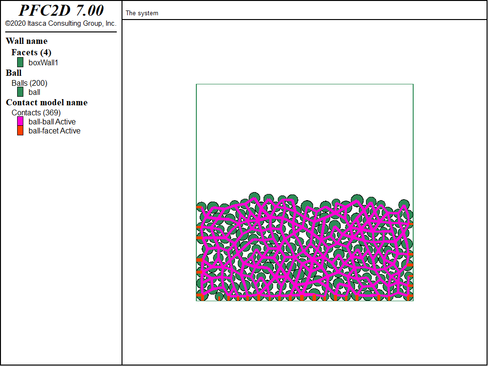
图 2：由“cmat2.dat 数据文件（cmat2.dat）”构建的最终系统。 本模型使用了两种不同的接触模型，具体取决于接触类型。
使用附加槽位
数据文件“cmat3.dat 数据文件（cmat3.dat）”为模型引入了更高的复杂性，其目的在于使用 hertz 接触模型模拟由钢和玻璃制成的混合球颗粒。在本例中，创建了两组不同的球颗粒以代表这两种材料，并在 CMAT 中注册可选槽位，从而根据两个接触部件的分组来控制 hertz 接触模型所使用的力学性质。
contact cmat add 1 model hertz ...
property hz_shear 30e9 hz_poiss 0.3 ...
fric 0.25 ...
dp_nratio 0.2 ...
range group 'glass' matches 2
contact cmat add 2 model hertz ...
property hz_shear 70e9 hz_poiss 0.3 ...
fric 0.05 ...
dp_nratio 0.2 ...
range group 'steel' matches 2
contact cmat default type ball-ball ...
model hertz ...
property hz_shear 50e9 hz_poiss 0.3 ...
fric 0.05 ...
dp_nratio 0.2
contact cmat default type ball-facet ...
model linear ...
property kn 1e6 dp_nratio 0.2
上述命令定义了三个与 ball-ball 接触相关的槽位。
- 槽位 1 控制 hertz 接触模型的分配，该模型的性质与玻璃-玻璃相互作用相一致。这是通过 glass 分组标识符实现的。
- 槽位 2 控制 hertz 接触模型的分配，该模型的性质与钢-钢相互作用相一致。这是通过 steel 分组标识符实现的。
- ball-ball 接触的默认槽位控制 hertz 接触模型的分配，该模型的性质与玻璃-钢相互作用相一致。
在模拟过程中每当创建接触时，都会按如下方式处理 CMAT：首先，按索引号递增的顺序访问两个可选槽位。然后，若该接触不满足任何可选槽位的范围，则使用与所创建接触类型相对应的默认槽位。一旦在本模型中创建了接触，就会检查 CMAT 的槽位 1，以根据分配判据（即两个球颗粒的分组标识符为 glass）确定是否应使用相应的接触模型。若未满足分配判据，则以类似方式检查 CMAT 的槽位 2。若已访问 CMAT 的所有槽位且未找到合适的接触模型，则分配 CMAT 默认槽位中所保存的接触模型。
请注意，本示例中所用的范围选择基于为接触部件定义的分组。 分组（Groups）逻辑是一种通用工具，可用于标识同一模型组件的多个实例。分组可以赋予球颗粒、墙和刚性团簇，以及面片或子颗粒，甚至接触。然而，如本例所示，通常更有效的是根据赋予接触部件的分组来筛选接触，而不是使用为接触本身定义的分组。为此，可以使用 group 范围元素的 match 关键字。
图 3（Figure 3） 显示了系统的最终状态。球颗粒按其分组着色，接触则按剪切模量属性 剪切滞回（hz_shear） 的值着色（仅显示具有 hertz 模型的接触）。在模拟过程中，各接触模型属性均已得到适当的赋值。

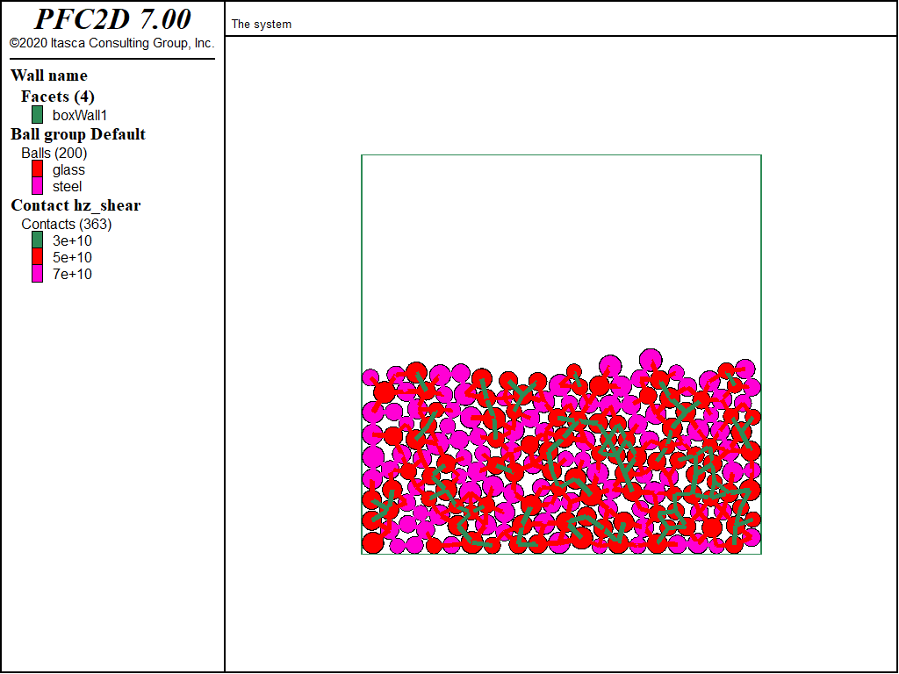
图 3：由“cmat3.dat 数据文件（cmat3.dat）”构建的最终系统。 球颗粒按分组（钢和玻璃）着色，接触按 剪切模量属性 剪切滞回（hz_shear） 的值着色。
属性继承
上文讨论的示例说明了如何使用 CMAT 中的可选槽位来指定接触模型性质的非均匀性。另一种可行方式是使用 性质继承，如下所示。
在接触模型的所有性质中，只有一组受限的性质可以从为接触部件定义的性质中继承。可继承的性质集合取决于各接触模型的具体实现，每个内置接触模型说明中包含的 性质 表都有一列，用于指示每种性质能否从表面性质继承（更多细节请参阅“接触模型框架（Contact Model Framework）”一节）。在“cmat4.dat 数据文件（cmat4.dat）”中，利用了 hertz 接触模型继承剪切模量 \(G\)、泊松比 \(\nu\) 和摩擦系数 \(\mu\) 的能力。与“cmat3.dat 数据文件（cmat3.dat）”中通过 CMAT 的可选槽位指定所有接触模型性质的做法不同，这里只指定 CMAT 的默认槽位，并在球颗粒上定义可继承的性质。
contact cmat default type ball-ball ...
model hertz ...
property dp_nratio 0.2
contact cmat default type ball-facet ...
model linear ...
property kn 1e6 dp_nratio 0.2
ball property 'hz_shear' 30e9 'hz_poiss' 0.3 'fric' 0.25 ...
range group 'glass'
ball property 'hz_shear' 70e9 'hz_poiss' 0.3 'fric' 0.05 ...
range group 'steel'
使用上述命令后，在模拟过程中每当形成接触时：
- 对于 ball-facet 接触，保留线性接触模型，其线性刚度为 \(k_n\)=106，法向临界阻尼比为 \(\beta_n\)=0.2；并且
- 对于 ball-ball 接触，安装 hertz 接触模型，其法向临界阻尼比为 \(\beta_n\)=0.2。
每个 ball-ball 接触的剪切模量 \(G\)、泊松比 \(\nu\) 和摩擦系数 \(\mu\) 的值并未在 CMAT 中直接指定。相反，这些性质定义在球颗粒上，接触创建时会根据球颗粒性质推导出相应的接触模型性质。有关 hertz 接触模型如何从部件性质推导接触模型性质的细节，请参阅 hertz 模型的性质继承一节（property inheritance section）。
实际上，所得到的 PFC 模型（如 图 4（Figure 4） 所示）与此前讨论的模型（图 3（Figure 3））完全相同，但在本模型中只使用了 CMAT 的默认槽位。本例中使用了性质继承来推导接触模型性质。请注意，所有 ball-ball 接触的法向临界阻尼比取值均已设为相同值。由于后一种性质无法从部件性质中继承，因此若要针对接触球颗粒的不同分组使用不同的取值，就必须使用 CMAT 中的可选槽位。

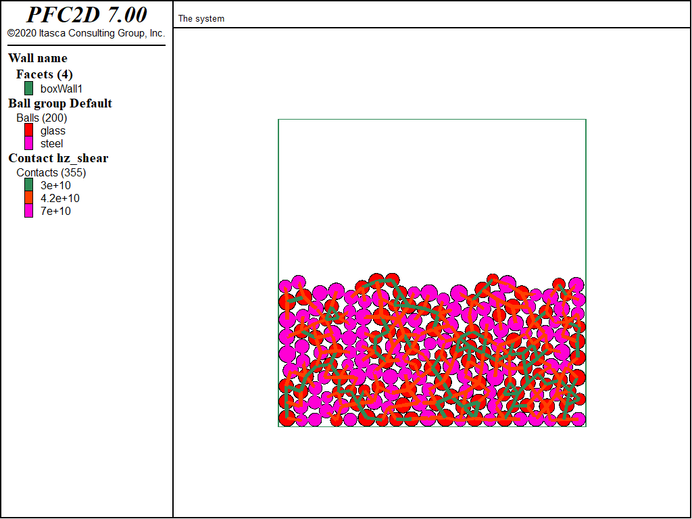
图 4：由“cmat4.dat 数据文件（cmat4.dat）”构建的最终系统。 球颗粒按分组（钢和玻璃）着色，接触按 剪切模量性质 剪切滞回（hz_shear） 的值着色。
修改已有接触
上述所有示例讨论了指定 CMAT 的不同方式，以控制在循环计算过程中新建的接触应分配哪种接触模型（以及哪些性质）。构建 PFC 模型时经常需要的另一项操作是修改已有接触（既可以完全覆盖现有的接触模型，也可以只修改选定的性质）。
数据文件“cmat5.dat 数据文件（cmat5.dat）”演示了两种可用于修改已有接触的策略：
- 修改 CMAT 并发出
contact cmat apply命令以重置接触模型；以及 - 使用 contact 命令（contact commands） 修改选定的接触。
其目标是修改由“cmat3.dat 数据文件（cmat3.dat）”产生的状态，即一个玻璃球颗粒与钢球颗粒在容器中于重力作用下完成沉降的模型，并为玻璃球颗粒之间的所有接触安装 线性平行粘结（linear parallel-bond） 接触模型。所得到的模型可以表示一种系统，其中玻璃-玻璃接触已通过热过程或化学过程烧结在一起。
第一种方式通过以下命令实现：
; 修改 CMAT 的第 1 个可选槽位（玻璃球之间的接触）
contact cmat modify 1 model linearpbond ...
method deformability emod 1e6 krat 0.5 ...
pb_deformability emod 1e6 krat 0.5 ...
property fric 0.25 dp_nratio 0.2 ...
pb_ten 1e8 pb_coh 1e8 pb_fa 30.0
; 应用 CMAT——模型中所有已有接触都会被处理，并
; 安装新的接触模型。注意，原有接触模型中的全部信息在
; 被新接触模型替换后都将丢失。
contact cmat apply
在本例中，修改 CMAT 的第一个槽位，使其使用带有相应性质的线性平行黏结接触模型，并发出 contact cmat apply 命令。请回顾，CMAT 的第一个槽位是在“cmat3.dat 数据文件（cmat3.dat）”中定义的，用于作用于玻璃球颗粒之间的接触。执行 contact cmat apply 命令后系统的状态如 图 5（Figure 5） 所示。左侧显示了球颗粒（按分组着色），以及按接触模型名称着色的接触。正如预期，该模型中并存三种接触模型：ball-facet 接触处的线性接触模型、涉及至少一个钢球颗粒的接触的 hertz 接触模型，以及玻璃球颗粒之间接触的线性平行黏结接触模型。然而，必须注意，contact cmat apply 命令作用于所有已有接触；所有接触都已被处理，并根据 CMAT 中的当前设定重新分配了新的接触模型。因此，接触模型中存储的所有先前信息均已被重置。例如，图 5（Figure 5） 右侧显示了按 hertz 力的当前值着色的其余 hertz 接触。由于接触模型刚刚被重新分配，当前力等于其默认的初始零值。

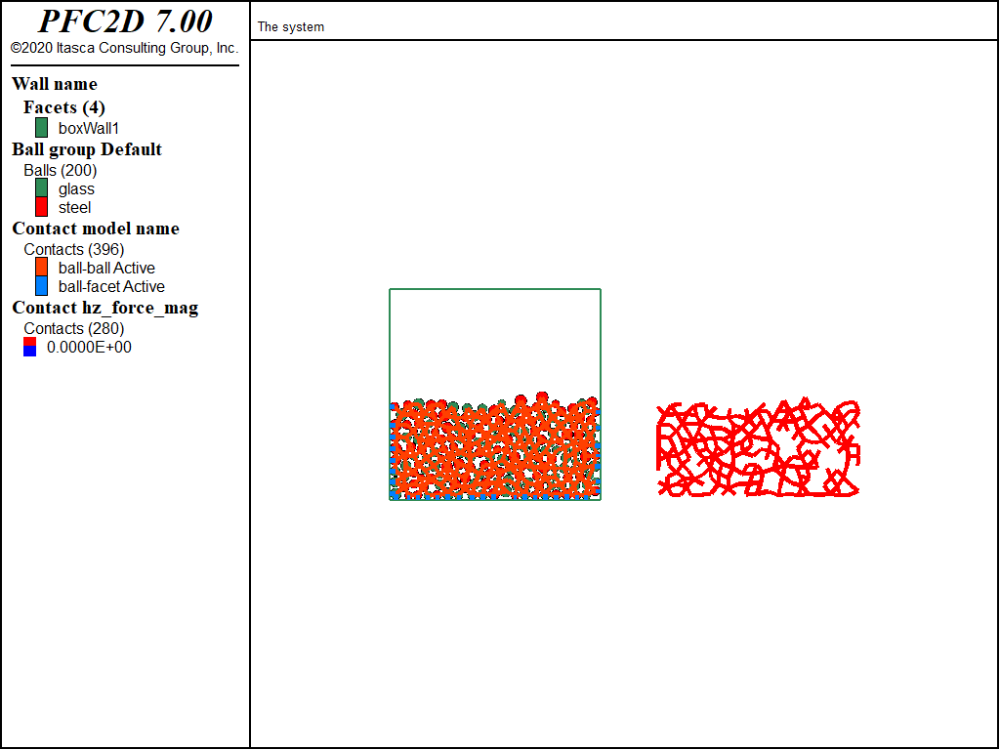
图 5：向所有接触发出 contact cmat apply 命令后系统的状态。
若要在修改玻璃-玻璃接触的同时保留其余接触，可以随 contact cmat apply 命令一并指定一个范围，以将其作用限制在选定的一组接触上（在本例中，即玻璃球颗粒之间的接触）。
; 修改 CMAT 的第 1 个可选槽位（玻璃球之间的接触）
contact cmat modify 1 model linearpbond ...
method deformability emod 1e6 krat 0.5 ...
pb_deformability emod 1e6 krat 0.5 ...
property fric 0.25 dp_nratio 0.2 ...
pb_ten 1e8 pb_coh 1e8 pb_fa 30.0
; 应用 CMAT——模型中所有已有接触都会被处理，并
; 安装新的接触模型。注意，原有接触模型中的全部信息在
; 被新接触模型替换后都将丢失。
contact cmat apply
contact method bond
执行上述命令后系统的状态如 图 6（Figure 6） 所示。图左侧显示按接触模型名称着色的接触，图右侧显示按力着色的 hertz 接触。在本例中，线性平行黏结接触模型已被恰当地分配给玻璃-玻璃接触，而所有其他接触都保留了先前的接触模型和数据，因为只有玻璃-玻璃接触被修改。

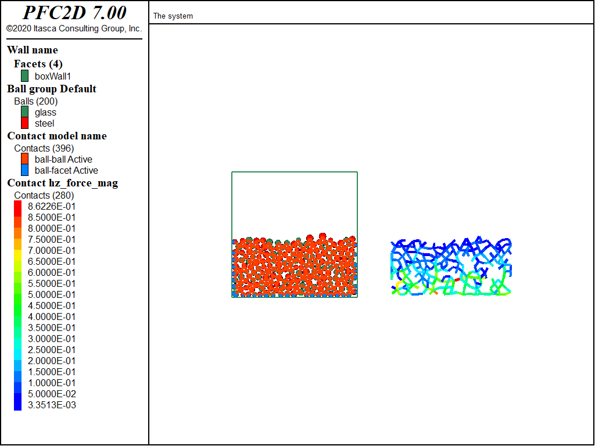
图 6：向选定的一组接触发出 contact cmat apply 命令后
系统的状态。
尽管该策略可用于修改已有接触，但必须注意，对 CMAT 的任何改动也会影响后续循环计算期间新建的接触。在 CMAT 被上述命令修改之后，玻璃球颗粒之间未来形成的接触将被分配线性平行黏结接触模型，这可能并非所期望的。克服该问题的一种可能做法是：在执行 contact cmat apply 命令修改选定接触之后，将 CMAT 中的改动还原，以便在玻璃球颗粒之间新建的接触上安装 hertz 接触模型[4]。
如果目的是在构建 PFC 模型的某一阶段修改选定的接触（或选定的接触模型性质），那么使用 contact 命令（contact commands）（只影响已有接触）可能比修改 CMAT（可能影响未来接触）更为合适。在本例中，可以只修改玻璃球颗粒之间的活动接触，使其使用具有所需性质的线性平行黏结接触模型，这可通过以下命令实现：
; 修改 CMAT 的第 1 个可选槽位（玻璃球之间的接触）
contact cmat modify 1 model linearpbond ...
method deformability emod 1e6 krat 0.5 ...
pb_deformability emod 1e6 krat 0.5 ...
property fric 0.25 dp_nratio 0.2 ...
pb_ten 1e8 pb_coh 1e8 pb_fa 30.0
; 仅对选中的接触应用 CMAT。但请注意，由于
; CMAT 已被修改，之后在玻璃球之间创建的接触将
; 安装线性平行黏结接触模型。
contact cmat apply range group 'glass' matches 2
contact method bond
系统的最终状态如 图 7（Figure 7） 所示。玻璃球颗粒之间的活动接触已赋予线性平行黏结模型，黏结已安装，系统在重力作用下达到平衡。所有接触（活动的与非活动的）均已显示，并按各自接触模型的名称着色。在该系统中，非活动接触以及玻璃球颗粒之间的新接触将使用相应的 hertz 接触模型（如 CMAT 相应槽位中所定义）。

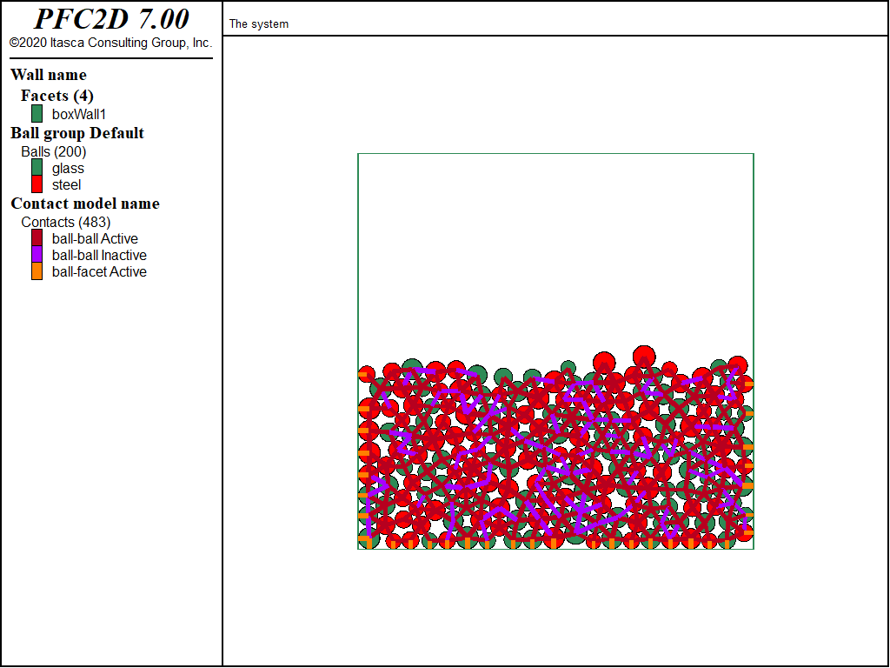
图 7：使用 contact 命令（contact commands） 在选定接触处安装线性平行黏结接触模型后的系统状态。
指定接近距离
CMAT 的另一个重要特性是可以为 CMAT 的每个槽位同时指定一个 接近距离。接近距离 用于强制规定在模拟过程中创建接触时应满足的最小距离（更多细节请参阅“30.0 - 更新空间搜索数据结构（30.0 - Update Spatial Searching Data Structures）”）。例如，当需要修改非活动接触时，这一特性会很有用，如下文所示。
数据文件“cmat6.dat 数据文件（cmat6.dat）”在容器中构建了一个密实的球颗粒集合体（对所有接触类型均使用线性接触模型），随后使用 接触模型（contact model） 命令在 ball-ball 接触处安装线性平行黏结接触模型，并使用 contact property 修改这些接触的性质。
在此阶段，使用 contact method 命令执行由线性平行黏结接触模型定义的 粘结（bond） 方法。默认情况下，该方法会在间隙小于或等于零的接触处安装黏结，但也可以指定一个正的黏结安装间隙。这里比较了多种情况，黏结安装间隙分别为 0.0、5 × 10-5 和 2.5 × 10-4。相应的系统如图 8 至 10 所示，其中左侧显示按间隙值着色的接触，右侧显示活动的和非活动的线性平行黏结接触。在该模型中，初始共有 1115 个 ball-ball 接触（间隙为负的活动接触和间隙为正的非活动接触），非活动 ball-ball 接触的最大间隙约为 1.8343 × 10-4。对间隙小于或等于零的接触执行 bond 方法（图 8（Figure 8））后，有 983 个接触被黏结，132 个接触保持未黏结。对间隙小于或等于 5 × 10-5 的接触执行 bond 方法（图 9（Figure 9））后，有 1025 个接触被黏结，90 个接触保持未黏结。最后，对间隙小于或等于 2.5 × 10-4 的接触执行 bond 方法（图 10（Figure 10））后，全部 1115 个 ball-ball 接触均被黏结。

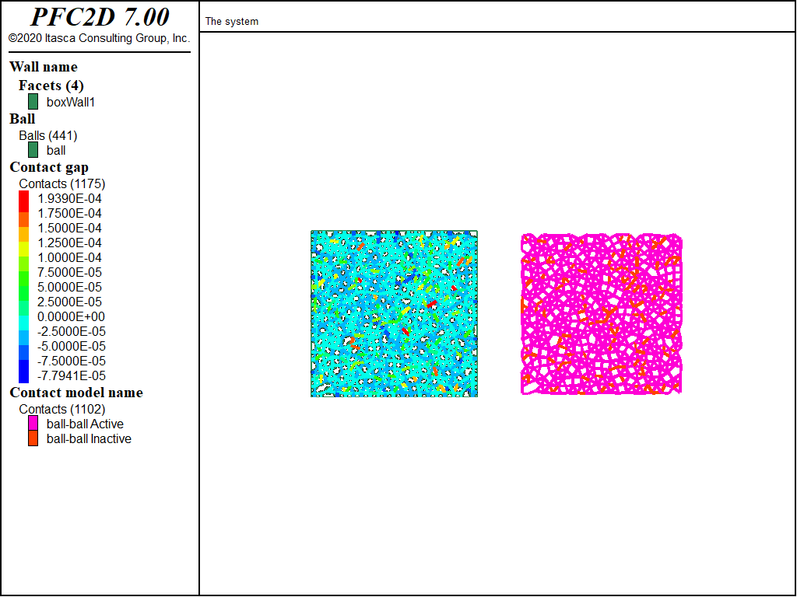
图 8：在黏结安装间隙为 0.0 的条件下（使用线性平行黏结接触模型） 对接触进行黏结后的系统状态。

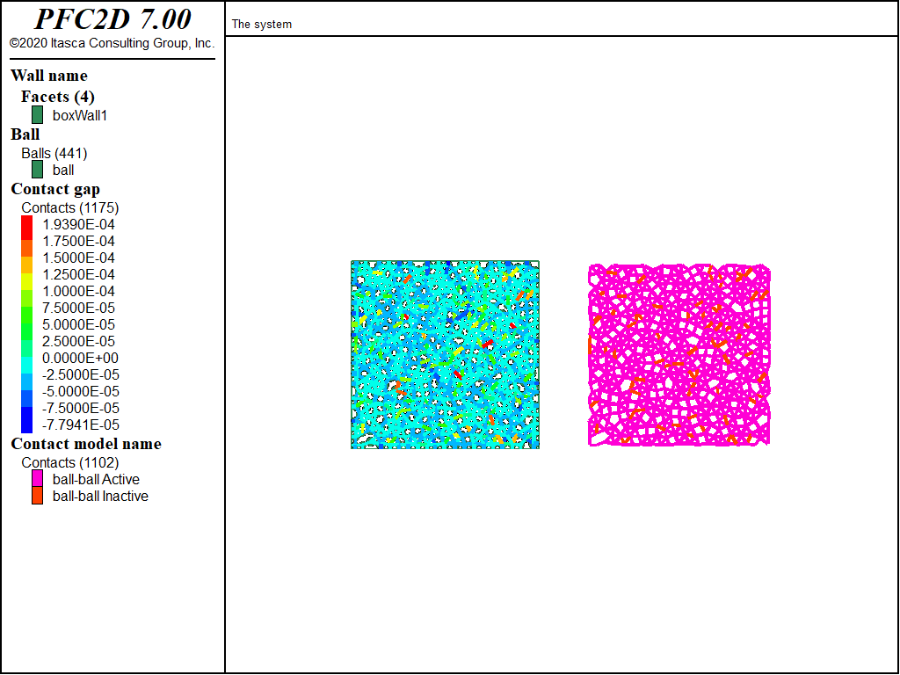
图 9：在黏结安装间隙为 5 × 10-5 的条件下（使用线性平行黏结接触模型） 对接触进行黏结后的系统状态。

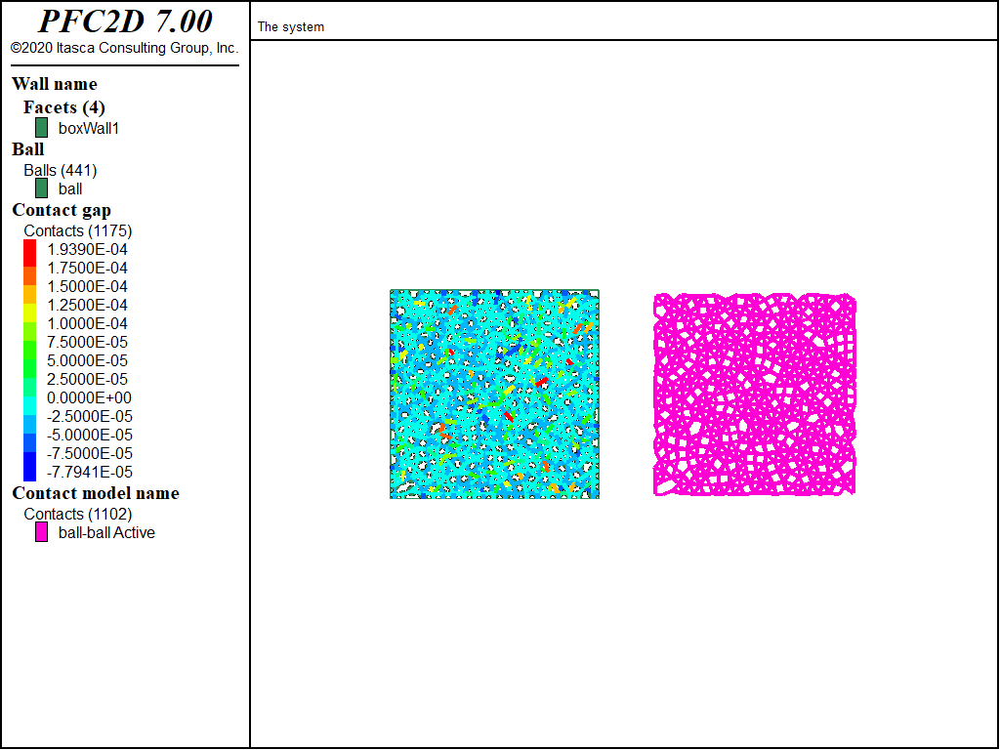
图 10：在黏结安装间隙为 2.5 × 10-4 的条件下（使用线性平行黏结接触模型） 对接触进行黏结后的系统状态。
但请注意，由于 CMAT 中未指定接近距离，创建非活动接触时所采用的最小距离由接触检测逻辑自行决定。在此情况下，该值（1.8343 × 10-4）小于期望的黏结安装间隙。由于 contact method 命令只对现有接触进行操作，系统中可能存在一些球颗粒对，其间隙介于 1.8343 × 10-4 与 2.5 × 10-4 之间，但尚未为它们创建接触，因此这些球颗粒对未被黏结。为确保球颗粒相互接近到小于期望的接近距离时能够创建接触，可以修改 CMAT 以使用 proximity 关键字。例如，以下命令将修改 CMAT、清理模型对象命令（model clean） 模型以强制按照新的接近距离设置创建新接触，将新的 CMAT 条目应用于现有的 ball-ball 接触，最后对间隙小于或等于 2.5 × 10-4 的接触进行黏结。
model restore 'cmat6'
contact cmat default type ball-ball ...
model linearpbond ...
property kn 1e6 ...
proximity 2.5e-4
; CLEAN 命令强制进行接触检测
; 执行后将创建新的接触，从而确保间距
; <= 2.5e-4 的球对现在具有未激活的接触
model clean
; 还必须执行 CMAT APPLY 命令，以修改已有接触
contact cmat apply range contact type 'ball-ball'
; 现在可以修改间隙 <= 2.5e-4 的接触
contact model linearpbond range contact type 'ball-ball' gap 2.5e-4
contact property kn 1e6 ks 1e6 fric 0.5 ...
pb_kn 1e6 pb_ks 1e6 ...
pb_ten 1e8 pb_coh 1e8 ...
range contact model 'linearpbond'
contact method bond gap 2.5e-4
最终模型如 图 11（Figure 11） 所示。采用这些新设置后，系统中总共有 1280 个接触，其中 1163 个接触被有效黏结。所有间隙小于或等于期望值 2.5 × 10-4 的球颗粒对均已黏结。

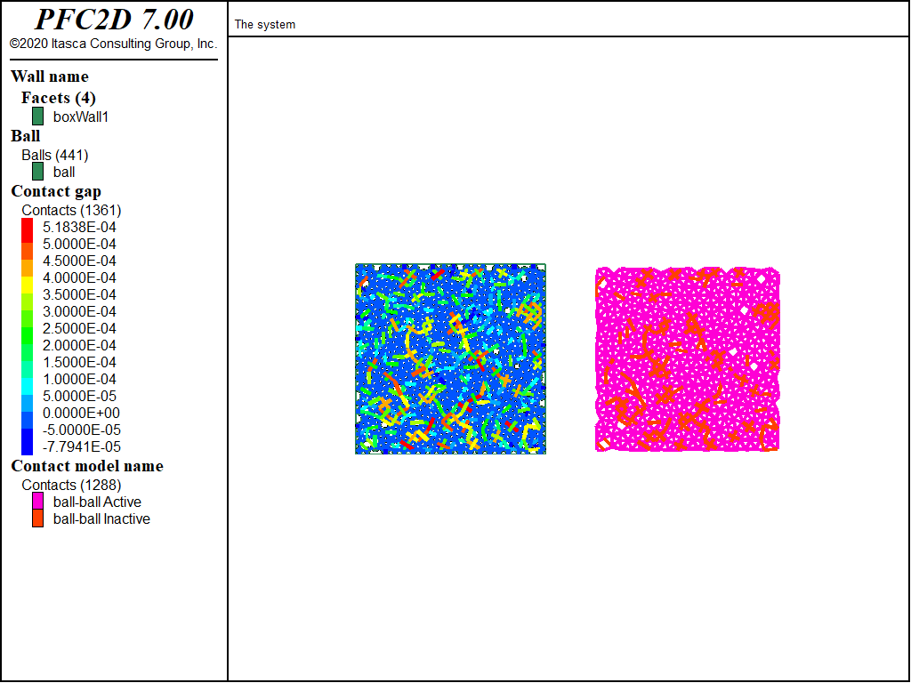
图 11：在黏结安装间隙为 2.5 × 10-4 的条件下（使用线性平行黏结接触模型） 对接触进行黏结后的系统状态。
讨论
本教程说明了 CMAT 的主要用途，并着重强调了一些重要特性，可归纳如下。
- CMAT 规定了创建接触时应安装哪些接触模型。默认情况下，PFC 安装的接触模型为 空模型（null model）。因此，用户需要自行设置 CMAT。
- CMAT 由附加于各接触类型的默认槽位组成，也可以包含附加于范围的可选槽位。结合性质继承，这为构建接触本构行为呈非均匀分布的模型提供了灵活性。
- CMAT 可以修改，并重新施加到全部接触或选定接触上。然而，对 CMAT 的任何改动都可能改变将来接触上安装的接触模型。若只想修改已有接触，则应优先使用 contact 命令（contact commands）。
- 可在 CMAT 中使用 proximity 关键字指定可创建接触的最小距离。例如，这可确保接触在所需距离内创建，并能够修改这些接触。
数据文件
cmat1.dat (2D)
; 文件名：cmat1.dat (2D)
;
; 演示 CMAT 的简单用法
; （所有默认槽位填入相同数据）
;=========================================================================
model new
model large-strain on
model random 10001
model domain extent -1.5e-2 1.5e-2 condition destroy
wall generate box -1.0e-2 1.0e-2 one-wall
ball generate number 200 radius 0.4e-3 0.6e-3 box -1.0e-2 1.0e-2
ball attribute density 2500.0
; excerpt-wals-start
; 设置 CMAT 的全部默认槽位
contact cmat default model linear property kn 1e6 dp_nratio 0.2
; excerpt-wals-end
model gravity 9.81
model solve
model save 'cmat1'
program return
;=========================================================================
; 文件结束：cmat1.dat (2D)
cmat2.dat (2D)
; 文件名：cmat2.dat (2D)
;
; 演示 CMAT 的简单用法
; （默认槽位填入不同的数据）
;=========================================================================
model new
model large-strain on
model random 10001
model domain extent -1.5e-2 1.5e-2 condition destroy
wall generate box -1.0e-2 1.0e-2 one-wall
ball generate number 200 radius 0.4e-3 0.6e-3 box -1.0e-2 1.0e-2
ball attribute density 2500.0
; excerpt-duwx-start
; 为球-球和球-面片接触类型设置不同的接触模型
contact cmat default type ball-ball ...
model hertz ...
property hz_shear 30e9 hz_poiss 0.3 ...
fric 0.25 ...
dp_nratio 0.2
contact cmat default type ball-facet ...
model linear ...
property kn 1e6 dp_nratio 0.2
; excerpt-duwx-end
model gravity 9.81
model solve
model save "cmat2"
program return
;=========================================================================
; 文件结束：cmat2.dat (2D)
cmat3.dat (2D)
; 文件名：cmat3.dat (2D)
;
; 演示 CMAT 的高级用法
; （默认槽位与可选槽位填入不同的数据）
;=========================================================================
model new
model large-strain on
model random 10001
model domain extent -1.5e-2 1.5e-2 condition destroy
wall generate box -1.0e-2 1.0e-2 one-wall
ball generate number 100 radius 0.4e-3 0.6e-3 box -1.0e-2 1.0e-2 group 'glass'
ball generate number 100 radius 0.4e-3 0.6e-3 box -1.0e-2 1.0e-2 group 'steel'
ball attribute density 2500.0 range group 'glass'
ball attribute density 7500.0 range group 'steel'
; excerpt-oohc-start
contact cmat add 1 model hertz ...
property hz_shear 30e9 hz_poiss 0.3 ...
fric 0.25 ...
dp_nratio 0.2 ...
range group 'glass' matches 2
contact cmat add 2 model hertz ...
property hz_shear 70e9 hz_poiss 0.3 ...
fric 0.05 ...
dp_nratio 0.2 ...
range group 'steel' matches 2
contact cmat default type ball-ball ...
model hertz ...
property hz_shear 50e9 hz_poiss 0.3 ...
fric 0.05 ...
dp_nratio 0.2
contact cmat default type ball-facet ...
model linear ...
property kn 1e6 dp_nratio 0.2
; excerpt-oohc-end
model gravity 9.81
model solve
model save 'cmat3'
program return
;=========================================================================
; 文件结束：cmat3.dat (2D)
cmat4.dat (2D)
; 文件名：cmat4.dat (2D)
;
; 演示带参数继承的 CMAT 用法
;=========================================================================
model new
model large-strain on
model random 10001
model domain extent -1.5e-2 1.5e-2 condition destroy
wall generate box -1.0e-2 1.0e-2 one-wall
ball generate number 100 radius 0.4e-3 0.6e-3 box -1.0e-2 1.0e-2 group 'glass'
ball generate number 100 radius 0.4e-3 0.6e-3 box -1.0e-2 1.0e-2 group 'steel'
ball attribute density 2500.0 range group 'glass'
ball attribute density 7500.0 range group 'steel'
; excerpt-ntmp-start
contact cmat default type ball-ball ...
model hertz ...
property dp_nratio 0.2
contact cmat default type ball-facet ...
model linear ...
property kn 1e6 dp_nratio 0.2
ball property 'hz_shear' 30e9 'hz_poiss' 0.3 'fric' 0.25 ...
range group 'glass'
ball property 'hz_shear' 70e9 'hz_poiss' 0.3 'fric' 0.05 ...
range group 'steel'
; excerpt-ntmp-end
model gravity 9.81
model solve
model save 'cmat4'
program return
;=========================================================================
; 文件结束：cmat4.dat (2D)
cmat5.dat (2D)
; 文件名：cmat5.dat (2D)
;
; 演示 CMAT 的高级用法
; 通过 CMAT APPLY 或 contact 命令修改已有接触
;=========================================================================
model restore 'cmat3'
; excerpt-xkbh-start
; 修改 CMAT 的第 1 个可选槽位（玻璃球之间的接触）
contact cmat modify 1 model linearpbond ...
method deformability emod 1e6 krat 0.5 ...
pb_deformability emod 1e6 krat 0.5 ...
property fric 0.25 dp_nratio 0.2 ...
pb_ten 1e8 pb_coh 1e8 pb_fa 30.0
; 应用 CMAT——模型中所有已有接触都会被处理，并
; 安装新的接触模型。注意，原有接触模型中的全部信息在
; 被新接触模型替换后都将丢失。
contact cmat apply
contact method bond
; excerpt-xkbh-end
model save 'cmat5a'
model cycle 10
model solve
model save 'cmat5b'
model restore 'cmat3'
; excerpt-nvet-start
; 修改 CMAT 的第 1 个可选槽位（玻璃球之间的接触）
contact cmat modify 1 model linearpbond ...
method deformability emod 1e6 krat 0.5 ...
pb_deformability emod 1e6 krat 0.5 ...
property fric 0.25 dp_nratio 0.2 ...
pb_ten 1e8 pb_coh 1e8 pb_fa 30.0
; 仅对选中的接触应用 CMAT。但请注意，由于
; CMAT 已被修改，之后在玻璃球之间创建的接触将
; 安装线性平行黏结接触模型。
contact cmat apply range group 'glass' matches 2
contact method bond
; excerpt-nvet-end
model save 'cmat5c'
model cycle 10
model solve
model save 'cmat5d'
model restore 'cmat3'
; 使用 contact 命令修改玻璃球之间的已有接触。
contact model linearpbond range group 'glass' matches 2 contact gap 0.0
contact method deformability emod 1e6 krat 0.5 ...
pb_deformability emod 1e6 krat 0.5 ...
bond ...
range contact model 'linearpbond'
contact property fric 0.25 dp_nratio 0.2 ...
pb_ten 1e8 pb_coh 1e8 pb_fa 30.0 ...
range group 'glass' matches 2
model cycle 10
model solve
model save 'cmat5e'
program return
;=========================================================================
; 文件结束：cmat5.dat (2D)
cmat6.dat (2D)
; 文件名：cmat6.dat (2D)
;
; 演示结合 PROXIMITY 关键字的 CMAT 高级用法
;=========================================================================
model new
model large-strain on
model random 10001
model domain extent -1.5e-2 1.5e-2 condition destroy
contact cmat default model linear property kn 1e6
wall generate box -1.0e-2 1.0e-2 one-wall
ball distribute porosity 0.12 ...
radius 0.4e-3 0.6e-3 ...
box -1.0e-2 1.0e-2
ball attribute density 2000.0 damp 0.7
model mechanical timestep update 1 increment 1.05
model cycle 1000 calm 10
model solve
model save 'cmat6'
; 为球-球接触安装 linearpbond 模型
contact model 'linearpbond' range contact type 'ball-ball'
; 设置 linearpbond 接触的参数
contact property kn 1e6 ks 1e6 fric 0.5 ...
pb_kn 1e6 pb_ks 1e6 ...
pb_ten 1e8 pb_coh 1e8 ...
range contact model 'linearpbond'
; 此时接触尚未黏结——对其进行黏结
contact method bond ; gap 0.0
model save 'cmat6a'
; 也可以用正的间隙黏结未激活的接触
contact method bond gap 5e-5
model save 'cmat6b'
; 这里希望黏结间隙 <= 2.5e-4 的接触
; 但已创建的接触并没有
; 这么大的间隙（即使是未激活的接触）
contact method bond gap 2.5e-4
model save 'cmat6c'
; 为确保在所需的黏结
; 安装间隙处存在未激活接触，必须在 CMAT 中使用 PROXIMITY 关键字。
; excerpt-ltyf-start
model restore 'cmat6'
contact cmat default type ball-ball ...
model linearpbond ...
property kn 1e6 ...
proximity 2.5e-4
; CLEAN 命令强制进行接触检测
; 执行后将创建新的接触，从而确保间距
; <= 2.5e-4 的球对现在具有未激活的接触
model clean
; 还必须执行 CMAT APPLY 命令，以修改已有接触
contact cmat apply range contact type 'ball-ball'
; 现在可以修改间隙 <= 2.5e-4 的接触
contact model linearpbond range contact type 'ball-ball' gap 2.5e-4
contact property kn 1e6 ks 1e6 fric 0.5 ...
pb_kn 1e6 pb_ks 1e6 ...
pb_ten 1e8 pb_coh 1e8 ...
range contact model 'linearpbond'
contact method bond gap 2.5e-4
; excerpt-ltyf-end
model save 'cmat6d'
program return
;=========================================================================
; 文件结束：cmat6.dat (2D)
尾注
| [1] | 要在 PFC 中查看本项目，请使用程序菜单。
⮡ PFC |
| [2] | 在 PFC2D 和 PFC3D 的早期版本中（直至 4.0 版），默认假定采用 linear 或 Hertz 接触模型。当时没有通用机制可以方便地使用其他接触模型，或在同一个 PFC 模型中使用多种接触模型。因此，这类模型过去需要借助高级而繁琐的 FISH 编程。本文讨论的 CMAT 工具是一种通用工具，可以简化此类任务。 |
| [3] | 接触模型的属性特定于各个接触模型。内置接触模型的列表见 此处（here），每个模型的说明中都详细列出了其全部属性。 |
| [4] | 当然，还应细化随 contact cmat apply 命令一同指定的范围，以便只修改活动接触。 |
| 这些内容对您有帮助吗？… | FLAC3D © 2019, Itasca | 原文更新于 2020 年 10 月 8 日 |